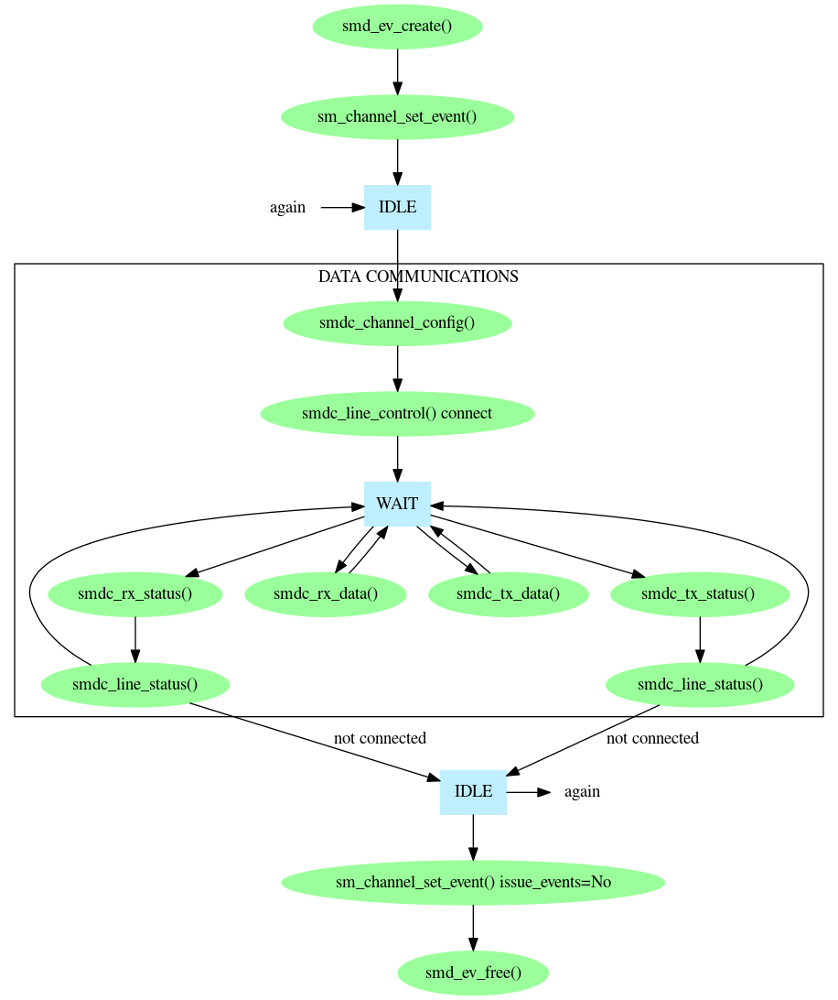

Prosody communications functionality can be divided into two broad groups called speech and data. Speech refers to the use of signals which are intended to represent an audio signal: data refers to all the other forms of communication. Prosody can handle many data formats other than the A-law and mu-law used by speech. The document Prosody data communications Protocols and Encodings shows all of them. However, all of these formats are handled in the same way through the Prosody data communications API.
To transmit data you need a Prosody channel which can perform output. This means one of the following:
The output from the channel must also have been connected appropriately. See Prosody Guide - how to use datafeeds for how to do this.
To receive data you need a Prosody channel which can perform input. This means one of the following:
The input from the channel must also have been connected appropriately. See Prosody Guide - how to use datafeeds for how to do this.
If transmission depends on reception, you must use a single full-duplex channel for both. This is the case for V.110 because the transmitter reports the flow-control status of the receiver.
A channel must be configured for data communications using smdc_channel_config(). Depending on the protocol being used, it may be necessary to use smdc_line_control() to make the protocol connect. Then you can use events to wait until the channel is ready. When a wait wakes up, you can:
To allow for maximum efficiency, smdc_rx_data() and smdc_tx_data() refuse to transfer data if there is a possible status change. This allows you to avoid checking the status if you are ready to transfer data except when a status change is likely.

In addition, smdc_line_control(), smdc_tx_control(), and smdc_rx_control() may be used as necessary on the channel while it is performing data communications.